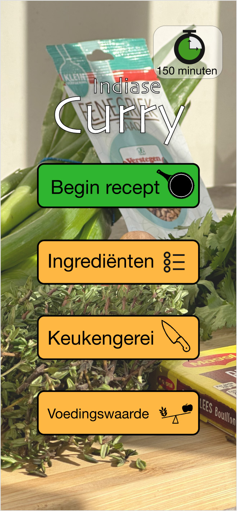
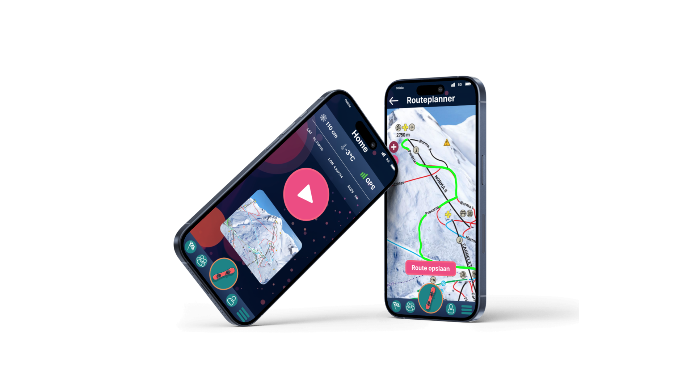
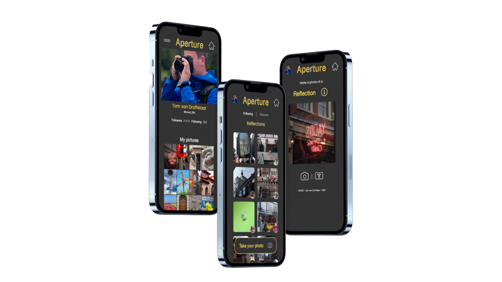

Heel Holland Kookt
Back
De opdracht
Type: Team project
Opdracht: UI/UX
Periode: November 2022
Ontwerp voor een kookliefhebber tussen 40 en 60 jaar een recepten app. Jullie maken als team een app voor het recept dat jullie kok heeft gekookt.
Jullie eindontwerp moet de kookliefhebber ondersteunen om jullie recept te maken. Bij het ontwerp hebben jullie aandacht voor de in de video genoemde uitleg en inzichten. Dit kunnen problemen zijn die de kok heeft genoemd, maar het kunnen ook behoeftes en kansen zijn die door de kok worden genoemd.
Het idee
We kregen in het begin een kok toegewezen met een recept. Onze kok had groene curry als recept.
Op basis van dit recept zijn we gaan nadenken over hoe de app eruit zou komen te zien. Hier hebben we inspiratie op gedaan uit andere kook apps en kookboeken.
Wij wilden ons onderscheiden van de rest met een tutorial filmpje bij elke stap. Zo kan de gebruiker precies zien wat diegene moet doen.
Het proces
In de eerste week hebben we vooral veel onderzoek gedaan en schetsen gemaakt. Aan het einde van elke week moesten we een User Trip met de doelgroep voor feedback
In week 2 hebben we de stappen gefilmd en onze app uitgewerkt tot een mi-fi versie. Ook aan het einde van deze week hebben wij een User Trip gedaan.
in week 3 hebben we het prototype Hi-Fi gemaakt. Hierbij hebben we de stijl aangepast en nog wat schermen en functies toegevoegd. We hebben bijvoorbeeld een timer in de app gemaakt, zodat je niet uit de app hoeft tijdens het koken.
Versies
Andere projecten

Aston Martin
Powder
Aperture